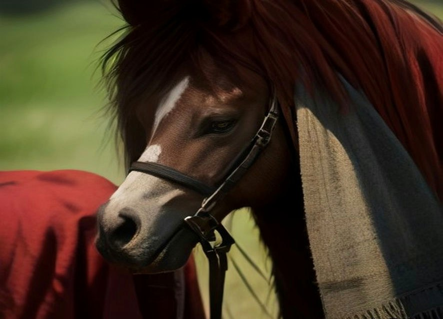
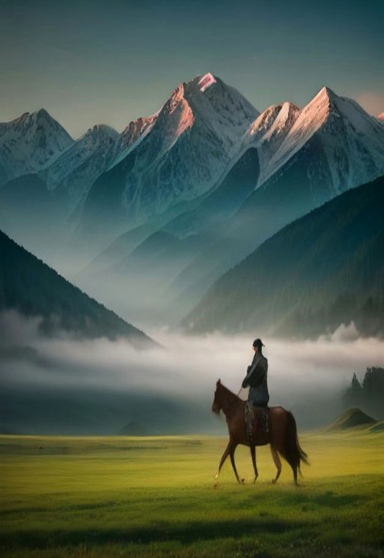
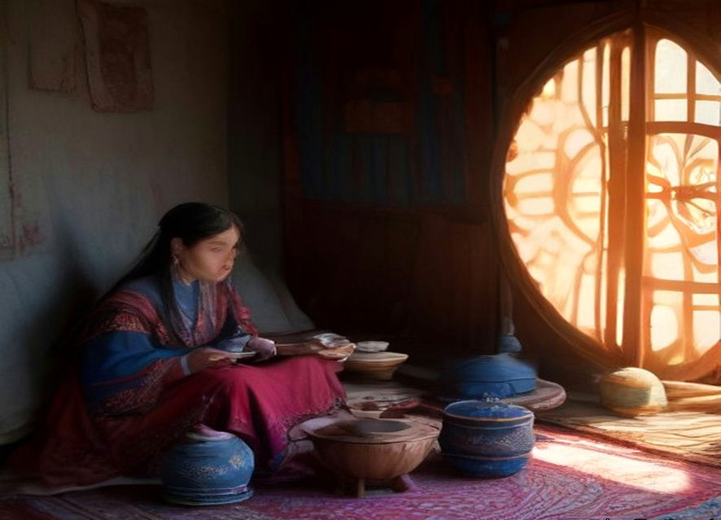
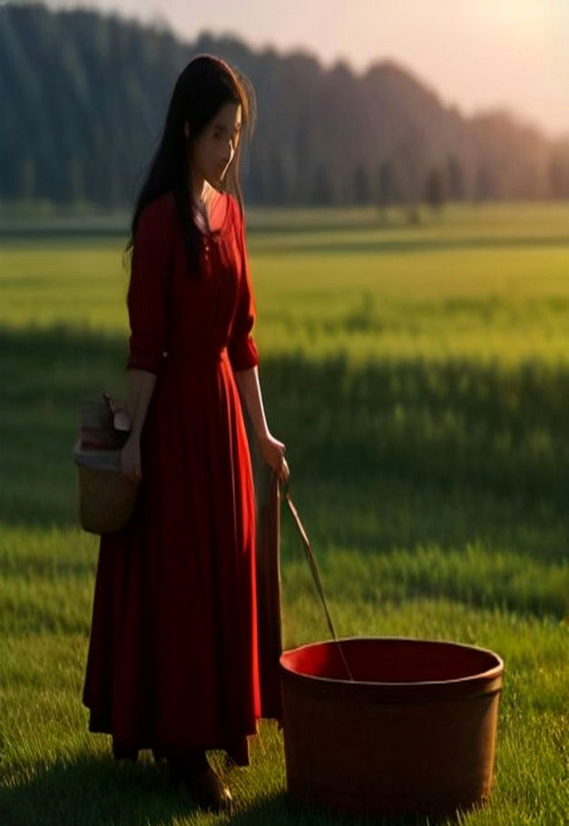
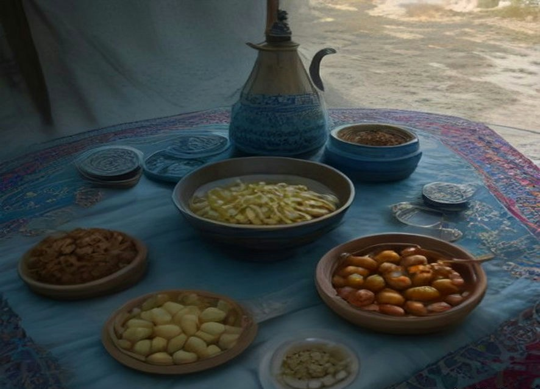
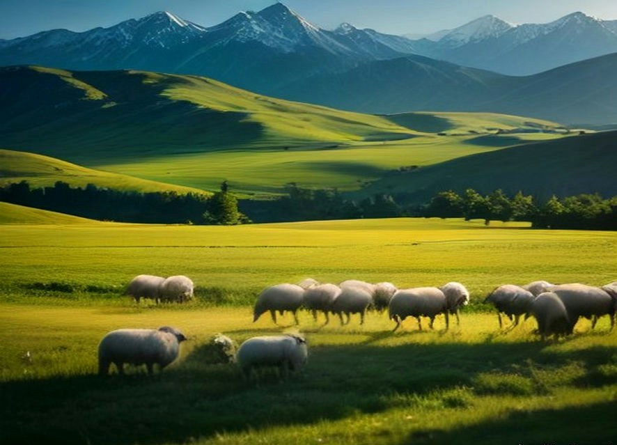
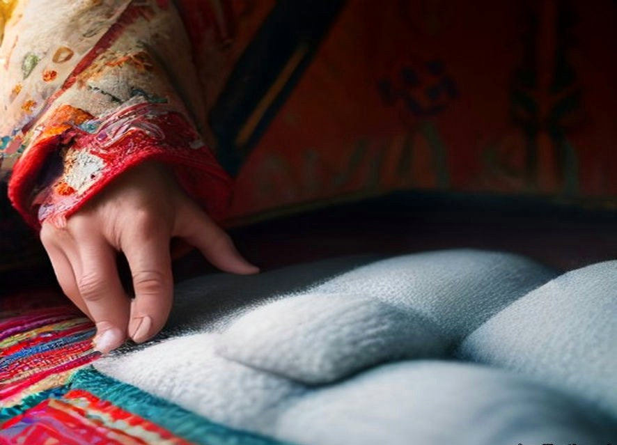
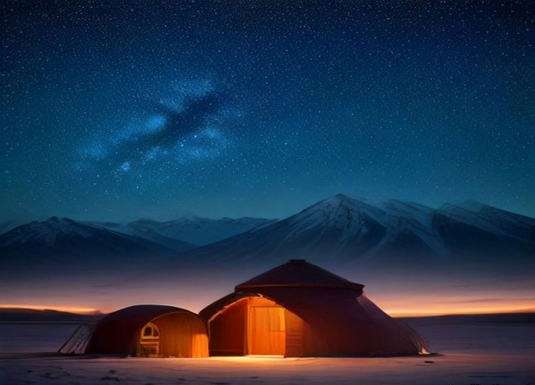
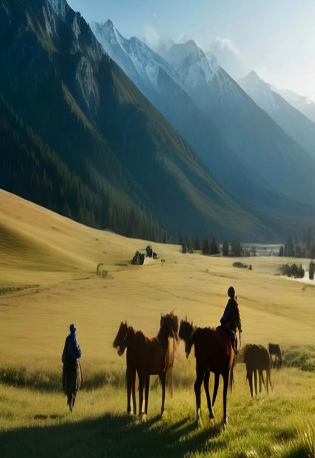
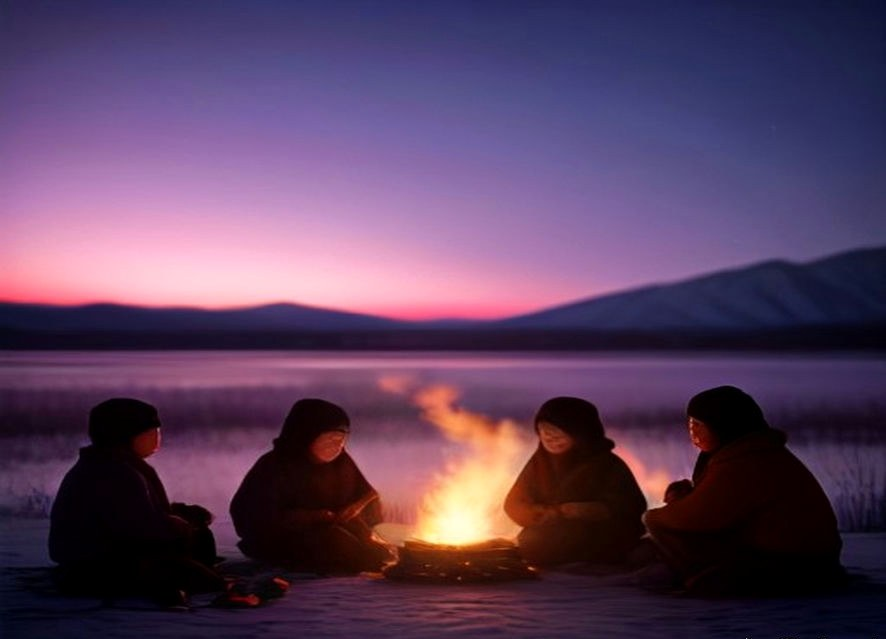

01骑马，不只是被牵着走
从刷马、备鞍、牵行开始，学会用腿和重心跟马说话。第三天，你可以独自控缰，跟主人去巡场。
每天约 2 小时 · 小组教学（≤1:4） · 按基础分组

01 / 为什么是阿吾勒
大巴停在观景台，拍照，上车，去下一个点。草原很美，但和你没有关系。
阿吾勒想做的，是让你住进草原的日常：和一户牧民同吃同住，跟着他们的作息干活、骑马、喝茶、聊天。几天后，你会认得这群羊，也会被他们认得。
“农耕社会教我们按节气生活；
—— 阿吾勒行前手册
牧人教我们跟着水草，
和天气生活。”

AUL · 牧人聚落
阿吾勒（Aul），哈萨克语里的“牧人聚落”。
几顶毡房、一群牛羊、一条溪水，就是一个家。
02 / 你会真正学会的
不是打卡项目，是牧人每天都要做的活。每天选 2—3 项，按季节和体力安排。

01从刷马、备鞍、牵行开始，学会用腿和重心跟马说话。第三天，你可以独自控缰，跟主人去巡场。
每天约 2 小时 · 小组教学（≤1:4） · 按基础分组

02奶泡的粗细、母马的体温、手上的节奏，都是判断新鲜的线索。你挤出的奶，傍晚会变成酸奶、奶疙瘩或一碗咸奶茶。
清晨 · 视产奶季节安排 · 不摆拍

03和面、垒灶、看火。馕要贴在馕坑壁上，手抓饭要等羊油把米粒裹亮。这一餐不是体验项目，是今天全家人的晚饭。
从食材到餐桌 · 一起做，一起吃

04跟牧羊犬一起把羊群赶去水源，认出羊群里的“头羊”。牧民看云就知道要不要收毡房，这种知识不在任何景区讲解牌上。
傍晚赶羊 · 学看云和风向 · 认识 5 种牧草

05学毡房的木架怎么搭起来，搓羊毛绳、擀毡、绣一小块哈萨克纹样。你可以带走自己做的杯垫或羊毛挂件。
手作材料全含 · 作品可带走 · 不赶工

06学会问候、道谢、说“好吃”。晚饭后听主人弹冬不拉，围着火堆跳一段黑走马。夜深了，抬头认北斗七星。这里没有路灯，银河就是路灯。
20 句日常哈萨克语 · 每晚都有星空
03 / 牧人的一天

“天亮就起，天黑就睡。
在这里，身体会先于手机醒来。”
钻出毡房，草尖全是露水。女主人已经把炉子生好，第一壶奶茶正在冒气。
今天轮到你。手要稳，节奏要匀，母马会回头看你。别怕，它比你更习惯被陌生人笨手笨脚地对待。
奶茶、馕、包尔萨克、自制果酱。盘腿坐，先给长辈倒茶。吃饱了才有力气上马。
刷马、备鞍、上马。今天学控缰和过溪。马跑起来的时候，风会把你没说完的话吹回肚子里。
手抓饭或纳仁。午后的草原很安静，风把毡房吹得轻轻响。不赶路，睡一会儿。
打馕、擀毡、修围栏、给羊羔做记号。每天不一样，看当天牧场需要什么。
和牧羊犬一起把羊群收回来，数一遍，一只都不能少。这是牧人一天里最踏实的时刻。
手抓肉、奶茶、聊天。想跳就跳一段黑走马，不想跳就坐着喝茶。语言不通也没关系，笑和碰杯是通用的。
篝火灭掉后，银河亮得不像真的。手机没有信号，正好抬头。
04 / 五天怎么过
这是最推荐的节奏：不长到疲惫，也不短到只在门口张望。3 天、7 天、14 天和更久，都可以按你的时间调整。
抵达 · 成为家里的一员
伊宁机场/火车站接站，采购进山物资，换乘越野车进牧场。献奶茶、认识家人、认自己的床铺。傍晚去草坡上走一走，看太阳落进天山。
牧人早晨 · 马背第一课
挤奶、早餐、刷马、备鞍。从牵行到独立控缰，教练按你的基础分配马匹。下午跟主人去巡草场，学看水源和围栏。
分段骑马 · 去高山夏牧场
跟主人骑马去看远处的羊群，过溪、上坡、穿过一片野花。中午在溪边铺开餐布，喝茶吃馕。傍晚回营地，马和人身上都是草的味道。
手艺日 · 打馕与擀毡
上午和女主人打馕、做奶食，下午擀毡、搓羊毛绳、绣一小块纹样。傍晚赶羊归圈，晚上篝火晚餐，听主人弹冬不拉。
告别 · 把草原带回城市
清晨挤奶，吃一顿慢早餐。和主人交换礼物、留一张合影。收拾行李，送伊宁机场/火车站。回程路上，你会发现自己开始看得懂云了。
3 天版：D1—D3，适合第一次来、时间紧。7 天版：在 D3 后加两天短途转场/高山湖，跟羊群走一段。14 天以上：住进牧人学徒节奏，参与更完整的转场、打草和冬储。
05 / 什么时候来
野花、接羔、母马产奶。草原刚绿，一切都轻。
转场、避暑、银河。孩子放暑假，牧场上最热闹。
打草、剪羊毛、储备冬粮。金色草坡，风里有干草味。
雪原、冬牧、手工。人少，火炉边的时间很长。
具体牧场和路线随季节调整。报名后，领队会根据草场、天气和牧家安排，给你一份当期路书。

06 / 体验与价格
以下为每人价格，人民币，不含各地往返伊宁的大交通。每期最多 8 人，4 人成行；1—3 人可补差包团。住得越久，日均越低。
初识牧场
3 天 2 晚
¥2,980/人
第一次来伊犁，想先住进草原看看。
牧人日常
5 天 4 晚
¥4,680/人
完整经历一次牧人家庭的日常，不赶路。
跟着羊群走
7 天 6 晚
¥6,280/人
多两天，跟羊群走一段短途转场。
住得更久
如果你真的想慢下来，可以住到两周、一个月，参加完整的打草、转场或冬储。价格按天递减，人越多越便宜。
14 天¥10,800/人
30 天¥19,800/人
更长¥600/天起
牧场不是景区，接待能力有限。8 人小团要配 1 名本地领队、1 名牧民向导，马匹、鞍具、保险、食宿、接送都要提前准备。
我们按人头向牧家支付住宿、餐饮和马匹劳务，不用“低价团”换流量。你付的钱，一部分会留在这户牧民家里。
含：伊宁往返牧场接送、牧场住宿、行程内三餐与奶茶、马匹/鞍具/头盔、马术教学、牧事与手作材料、汉语领队与翻译、50 万户外意外险、行前路书。
不含：往返伊宁的机票/火车、个人消费与酒水、单间差、因天气或道路中断产生的额外住宿交通、行程外额外骑马。
提交报名不收费。领队确认成行后，支付 30% 定金锁位，余款抵达伊宁当天结清。出发前 15 天可免费改期一次；因牧场或极端天气取消，定金全额退或改期。
07 / 先把丑话说在前面
公共旱厕，热水看天气和用水情况，部分时段没有手机信号。床品一客一换，建议自带睡袋内胆。
可以准备素食，但草原上选择有限。有过敏或忌口，请在报名时写清楚。
全程佩戴头盔，按能力分配马匹，小组教学（教练配比不超过 1:4）。全天骑行分段进行，中途下马休息。酒后、孕期、严重心脑血管疾病不建议参加。
可以记录自己的旅行，但不直播、不商业拍摄、不把牧民家当背景板。尊重，是这里唯一的门票。
如果你能接受这些，欢迎来住几天。
如果你想要的是酒店和景区，伊犁也有很多更好的选择。
08 / 谁带你生活
我们与伊犁河谷的哈萨克牧户长期合作，按人头向牧家支付住宿、餐饮和马匹费用。你住的是他们正在生活的家，不是为游客搭的布景。
全程有熟悉汉语和哈萨克语的本地领队陪同，负责翻译、协调和安全。牧场位置不公开，报名确认后发送路书，保护牧家的隐私和正常生活。
运气好，会赶上赛马、叼羊、阿肯弹唱或牧家婚礼。我们不人为安排，但真实发生的时候，会带你去。
09 / 你可能想问
可以。从刷马、备鞍、牵行开始，教练按基础分组，第一天不会让你跑。每天马背时间约 2 小时；全天骑行日分段进行，可以减量或坐车跟随。严重心脑血管疾病、孕期、酒后不建议参加。
本地领队全程翻译。牧民家的年轻人大多会一些汉语，长辈更多靠手势和笑。我们会提前给你一张 20 句日常用语卡片，学会“你好、谢谢、好吃”就够用了。
床品一客一换，餐具消毒。住宿以多人毡房或木屋为主，公共旱厕；简易淋浴视天气和用水情况开放，不是每天都有。介意的话，建议自带湿巾、速干毛巾和睡袋内胆。
牧场部分时段有 4G，移动/联通相对稳定，电信较弱。建议提前把行程告诉家人，下载离线地图。我们也会在进山前和出山后统一报平安。
8 岁以上、有家长陪同可以参加。马背活动会单独评估，给孩子配温顺的马和专人牵行。太小的孩子不建议进牧场，路途和作息都比较辛苦。
可以。3—30 天都能安排，5 天是最推荐的节奏。更长的驻留会进入“牧人学徒”模式，参与更完整的日常劳作，价格按天递减。
草原天气多变，小雨照常，我们会调整骑马和户外安排。遇到暴雨、冰雹、道路中断等极端情况，以安全为先，可能改期或取消，定金全额退。
防晒霜、墨镜、防风外套、长裤、防滑运动鞋或马靴、保温杯、个人药品、睡袋内胆。牧场早晚温差大，夏天也要带一件厚外套。报名后会发完整清单。
可以，记录自己的旅行没问题。拍牧民、拍孩子、拍院子之前，先问一声。不直播、不商业拍摄、不把别人的生活当流量。
下一季 · 5—10 月 · 每期 8 人
提交后 24 小时内，领队会加微信和你确认细节。报名免费，确认成行后再付定金。
微信号：AUL-ILI · 添加时请备注“伊犁”